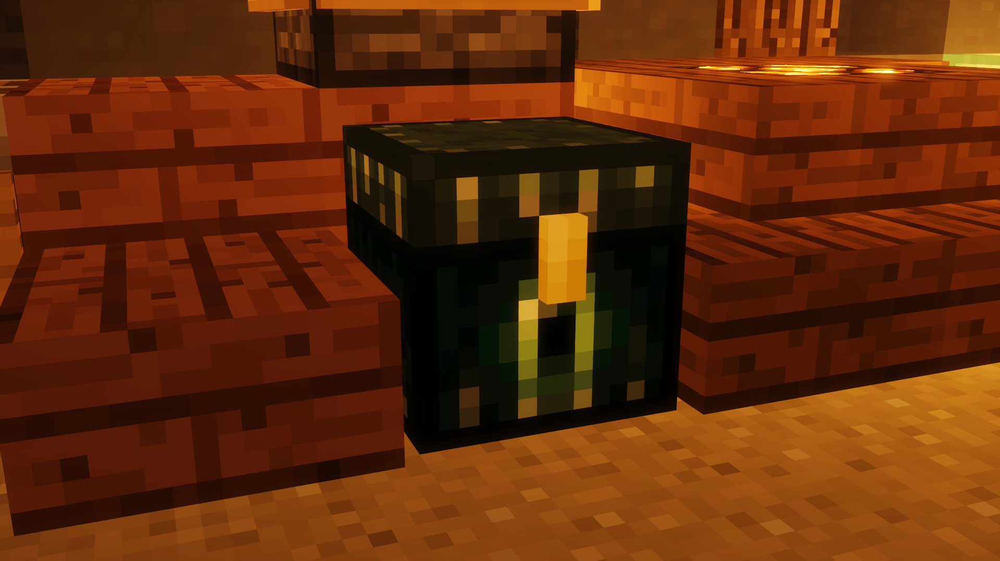

|  |
| The ender chest. |
The Ender Chest is a location in the spawn of each map. Upon right-clicking it, players will be able to put in and take out items from it.
Access to the ender chest is permanently unlocked at level 15 and is not removed when prestiging.
When the player prestiges, items in the ender chest are not removed. The ender chest typically has 27 slots. An additional 9 slots can be unlocked with each of the three tiers of the Inventory Management renown upgrade, unlocked at prestige XI, for a maximum of 54 slots.
Items from perks, killstreaks, mystic items, and megastreaks, such as the Olympus Potion and eggs, cannot be stored in the ender chest.
Trivia
The ender chest can also be accessed with Trash Panda.